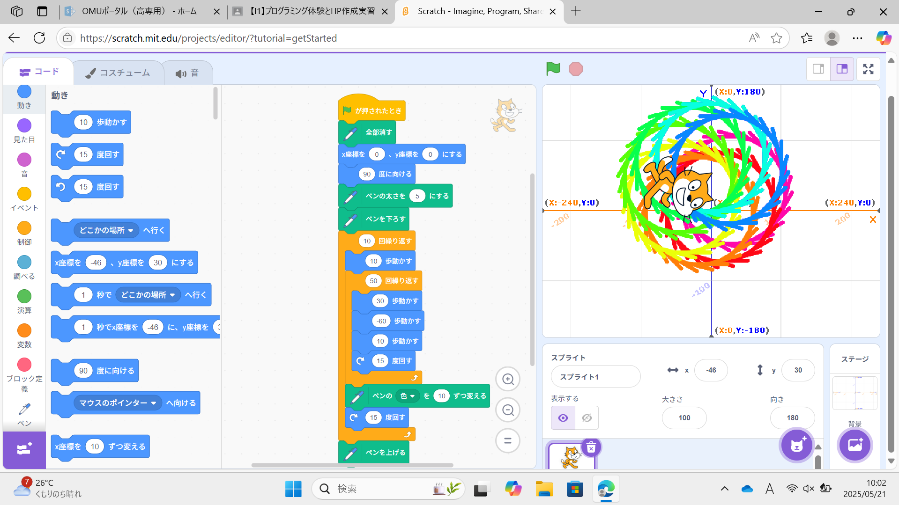
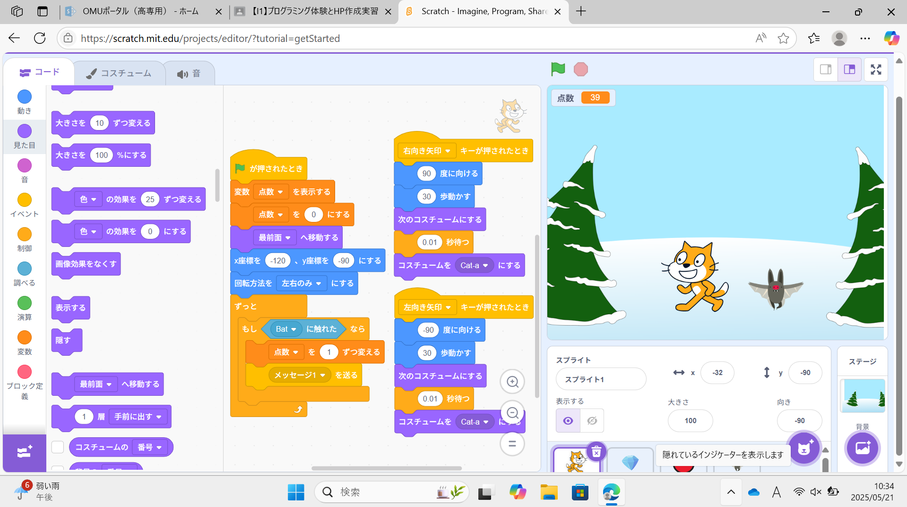

1週目のレポート ： 公大高専１年実習I-1
3a班21番 ニックネーム
第1週目
1-1 サイエンスアート

1.内容
今回は、scratchのラインアートを学んだ。スプライト(プログラミングで動かすキャラクターのこと) の猫を用い、プログラムで動かしたり角度を変えたりいろいろな動きをさせた。次に「ペン」と呼ばれる拡張機能を用いて 猫の動きに沿って線が描かれるようにして、そこで猫に複雑な動きを連続して行わせることで上の図のような図形 を描いた。動きのプログラムの数値を変えればもっと色々な図形が描ける。
2.感想
複雑な動きは、回転と前進を適当に組んだだけでできたので、その組み方や動きの数値を変えれば またまた違った図形が描けるというのがなんとも面白い所。もっと色々な図形を描きたい。
1-2 ゲーム

1.内容
scratchで簡単なゲームを作った。猫を右左の矢印のキーで動かせるようにして、そして上のランダムな位置からコウモリを 落とすようにしてその落ちてくるコウモリに猫が触れたら消えて変数によってポイントが上がるという仕組みにすることで 「落ちてくるコウモリを狩れ！」というよくありそうなゲームを作った。
2.感想
学んだのは至極簡単なことなのに、それらを活用するだけで簡単にゲームが作れるというのが驚きだった。 アレンジすればもっと面白いゲームが作れそうで、プログラミングは底が見えないな感心した。
1-3 ホームページ作成
私のホームページ
1.内容
GitHubと呼ばれるサイトにサインインして、簡単な操作を行うだけで、自分のウェブサイトを 作ることができる。その気になればいつでも編集して更新することができる。
2.感想
ウェブサイトもこんなに簡単に作れるのかと驚愕した。しかも作った時点で世界に公開されいいるという。 サイトを作るなどを、簡単なことではないはずなのに簡単にしてしまうような人々に尊敬の念が沸いた。
各ページへのリンク
1週目のレポート
2週目のレポート
3週目のレポート
私のホームページ